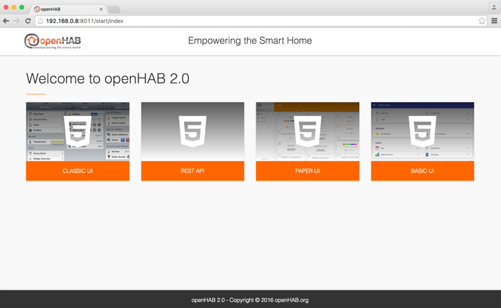
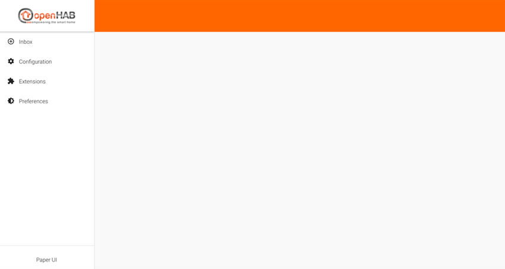
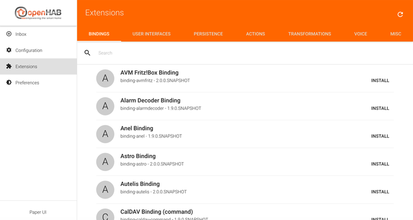
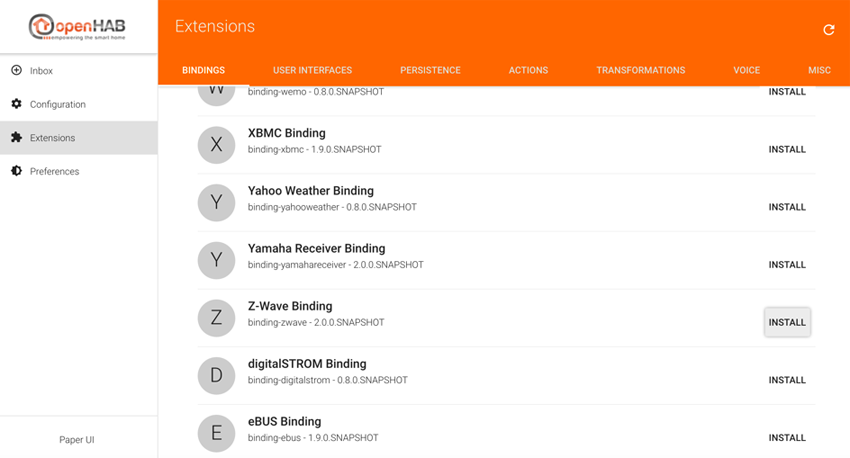
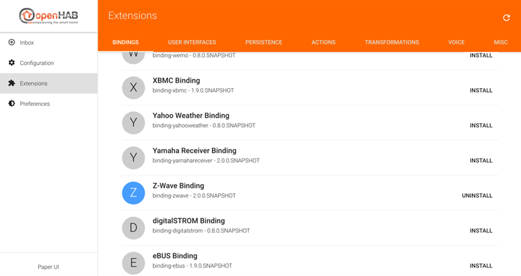
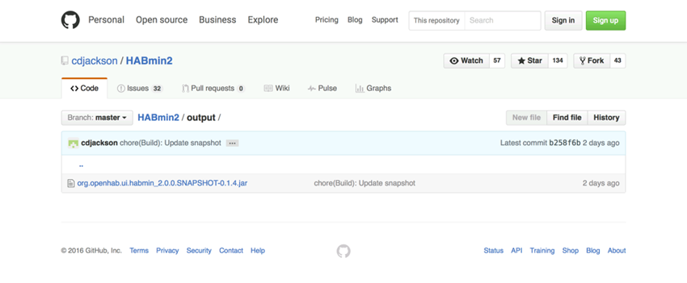
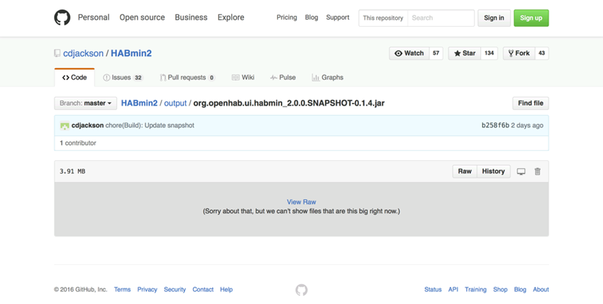
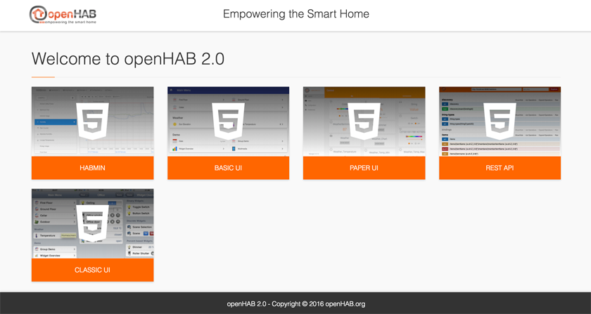

Installing the extensions
Introduction
Setting up the Z-Wave protocol inside openHAB 2 requires two steps:
- Z-Wave binding install
- HABmin install
In this chapter:
- I have chosen to download the latest night build, as HABmin 2 is in a beta phase,
Z-Wave binding install
We install Z-Wave binding before HABmin as HABmin relies on the first one.
Installing this binding is quite straightforward. It is to be done through the Paper UI of openHAB.
- Open your browser web at
http://localhost:8011, you should see the following screen:

- Click on Paper UI tile, you should see the following screen:

- In the left column, select Extensions. The list of the bindings appears.

- Scroll down to Z-Wave binding, click on install (at the right).

- After some times, the Z-Wave binding is installed and the display has changed. The logo of the binding is now blue, and “uninstall” has replaced “install”.

After a reasonable wait, if the progress bar is still on the screen and nothing else has changed on the display, try to refresh the page.
HABmin install
- This section is so far centred on Mac OS. It must be modified in order to cover Linux and Windows.*
We install HABmin after the Z-Wave binding as HABmin relies on the last one.
HABmin is not yet integrated to the Karaf architecture. So, we have to install it manually.
-
Search for the latest build of HABmin 2 at the address https://github.com/cdjackson/HABmin2/tree/master/output
-
Click on the org.openhab.ui.habmin_2.0.0.SNAPSHOT-0.1.4.jar link, this screen appears:

- At the left on the screen click on the RAW button. Other way of downloading HABmin2 will corrupt the software.

- The download finished, back to the terminal, at the openHAB> prompt:
cal:openHAB admin$ ./start.sh
Launching the openHAB runtime...
__ _____ ____
____ ____ ___ ____ / / / / | / __ )
/ __ \/ __ \/ _ \/ __ \/ /_/ / /| | / __ |
/ /_/ / /_/ / __/ / / / __ / ___ |/ /_/ /
\____/ .___/\___/_/ /_/_/ /_/_/ |_/_____/
/_/ 2.0.0-SNAPSHOT
Hit '<tab>' for a list of available commands
and '[cmd] --help' for help on a specific command.
Hit '<ctrl-d>' or type 'system:shutdown' or 'logout' to shutdown openHAB.
openhab>
- stop openHAB by keyboarding logout and enter :
openhab> logout - A few seconds after, the terminal prompt is displayed :
openhab> logout cal:openHAB callas$ - Move the HABmin software from the download folder to the addon folder
cal:openHAB callas$ mv ../Downloads/org.openhab.ui.habmin_2.0.0.SNAPSHOT-0.1.4.jar addons
Time for a trick
org.openhab.ui.habmin 2.0.0.SNAPSHOT-0.1.4.jar can be a little difficult to type. Terminal allows us to use auto completion to avoid that : just type the beginning, i.e.:
mv ../Downloads/org.opand press the tab key. Terminal will complete the name for you.
Launching openHAB for the second time
We are going to launch openHAB for the second time, in order to check that our install is successful.
- In the terminal window, type ./start.sh
cal:openHAB callas$ ./start.sh - Messages are displayed, wait until the “openhab>” prompt appears.
cal:openHAB admin$ ./start.sh
Launching the openHAB runtime...
__ _____ ____
____ ____ ___ ____ / / / / | / __ )
/ __ \/ __ \/ _ \/ __ \/ /_/ / /| | / __ |
/ /_/ / /_/ / __/ / / / __ / ___ |/ /_/ /
\____/ .___/\___/_/ /_/_/ /_/_/ |_/_____/
/_/ 2.0.0-SNAPSHOT
Hit '<tab>' for a list of available commands
and '[cmd] --help' for help on a specific command.
Hit '<ctrl-d>' or type 'system:shutdown' or 'logout' to shutdown openHAB.
openhab>
- Without closing the terminal, open your favorite web browser and type the following url:
http://localhost:8011, you should see the openHAB welcome screen, with a new UI : HABMIN.

Which browser should I use ?
Safari is supported by openHAB, but the fact is the browser used by the openHAB developer community - and by the owner of the ZWave plugin - is Google Chrome. I recommend then Google Chrome, as openHAB 2 is in a beta phase.